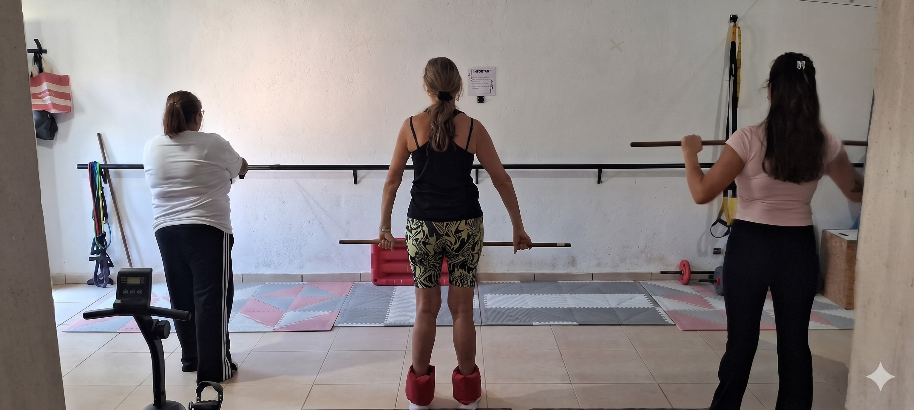

Tu salud, nuestra prioridad
Las limitaciones físicas, cognitivas o emocionales no son eventos aislados; impactan profundamente en tu desarrollo e integración social.
Por eso, no tratamos solo el síntoma. Abordamos la raíz de cada disfunción para lograr una recuperación real, sostenible y que te devuelva la autonomía a largo plazo.